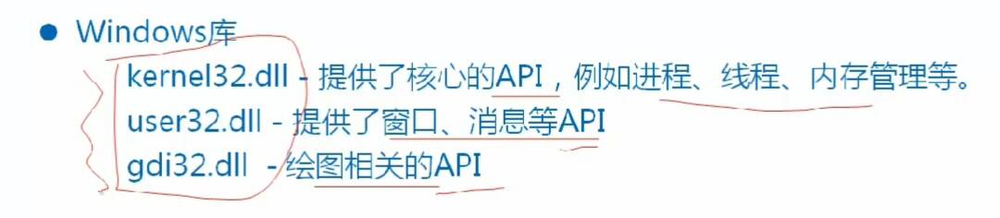
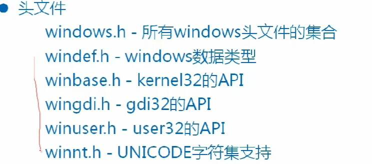
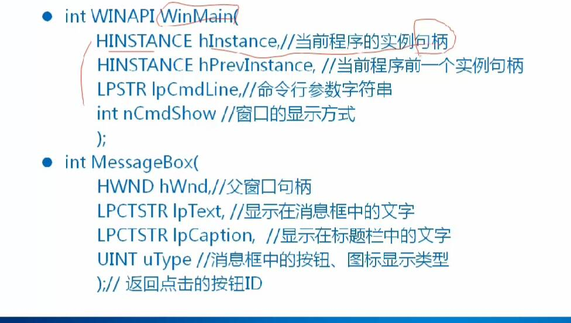
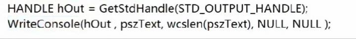

应用程序分类
控制台程序 Console
DOS程序，本身没窗口，通过Windows DOS窗口执行
main为其入口函数
窗口程序
有自己的窗口，可与用户交换
它的入口函数是WinMain
库程序
它是存放代码和数据的程序，执行文件可从中取出代码放到可执行文件
它又分为两类，静态库程序和动态库程序
对于静态库文件，它的文件后缀名是lib（linux为.a），它没有入口函数，无法执行，它的代码在编译连接时会放到可执行文件中
对于动态库文件，他的后缀名是dll（linux为.so），它的入口函数是dllMain，它不能单独运行，需要依附于其他程序，在连接是只会记录它的地址


再上图我们可以看见windows.h包含了所有windows头文件，所以我们写程序只需要写这一个头文件就可以了。
接下来我们看看相关函数

前面是它的数据类型
这里说一下句柄， 句柄（Handle）是一个是用来标识对象或者项目的标识符，可以用来描述窗体、文件等，值得注意的是句柄不能是常量。（它是用来找到内存的东西，但不是指针）。所以上面说的可以找到当前程序的实例句柄也就是说它能找到当前进程的内存。
MessageBox我们碰到很多，就是弹提示框的函数。前三个参数都能理解，第四个参数打个比方，你在关闭记事本的时候，他会给你提示，是否保存，取消就是关于它的设置。这个函数的返回要用一个值去保存，然后我们才能去发生这个消息，然后进行对消息处理。
窗口创建过程
有七个步骤：
1.定义WinMain函数
2.定义窗口处理函数
3.注册窗口类
4.创建窗口
5.显示窗口
6.消息循环
7.消息处理
在讲这些步骤之前我们先看看字符编码：
编码背景：
ASC 7位 128个
ASCII 8位 256个 新增了128个
DBCS 单双字节混合编码
UNICODE 我们常说的就是UTF-16（linux是UTF-8）
DBCS如果出现字母和汉字混合，就很难拿到自己想要的结果，而UTF-16用两个字节编码，字母采用补0法。不存在解析出错问题。
宽字节字符
wchar_t 实际类型是unsigned short。当用他时，字符串前面加“L”，需要用支持wchar_t函数操作宽字符，就像printf要用wprintf。
wprintf对UNICODE字符打印不完整。windows下一般使用WriteConsole API打印UNICODE。

WriteConsole的用法如上，第一个参数句柄我们可以通过GetStdHandle获取
下一节具体讲窗口创建的步骤